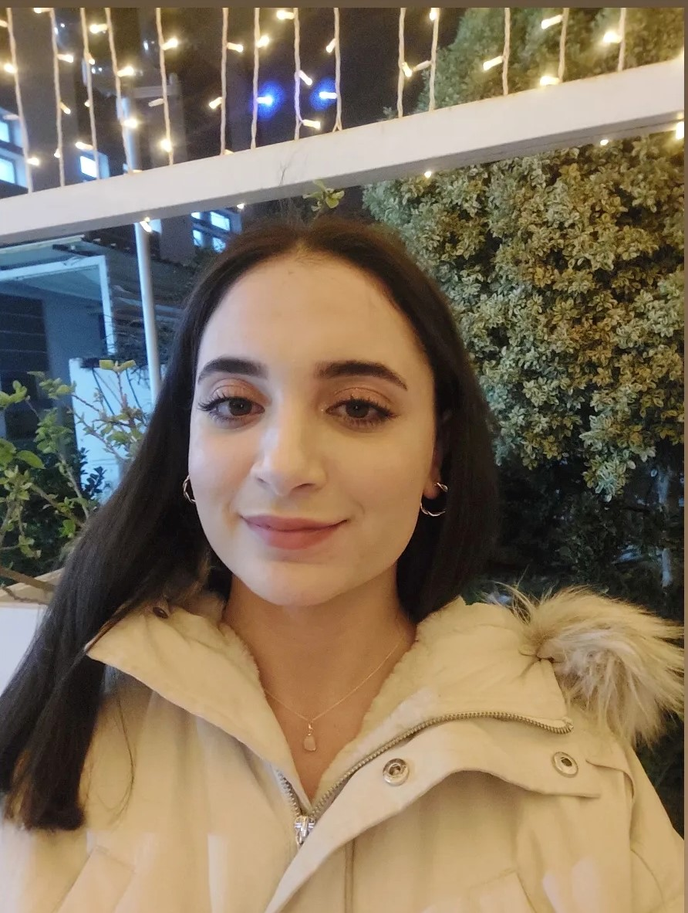

About me
👩🏻💻 My name is Meryam Bejaoui. I am a 21-year-old IT engineering student at Esprit. After passing the entrance examination to engineering studies, I am confident in my decision to pursue a career in Information Technology, as I have a genuine passion for technology and its ever-evolving nature. I am excited to bring my skills and knowledge to the table and be a valuable contributor to the field.
Languages spoken
- • Arabic
- • French
- • English
- • German
Skills
- • Problem-solving skills
- • Numerical skills
- • Mending skills
Hobbies
- • Reading
- • Writing
- • Gardening